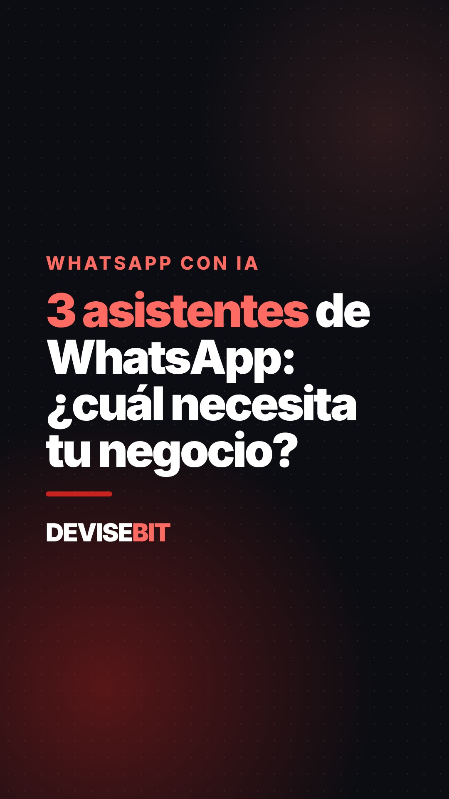
01 · 3 asistentes de WhatsApp
3 asistentes de WhatsApp con IA. ¿Cuál necesita tu negocio? Uno responde, otro vende y otro da turnos. Pedí la demo, link en el perfil 👇 #whatsapp #inteligenciaartificial #pymes #negocios #argentina
17 videos sin precios, en orden de publicación. Página interna: no compartir.

3 asistentes de WhatsApp con IA. ¿Cuál necesita tu negocio? Uno responde, otro vende y otro da turnos. Pedí la demo, link en el perfil 👇 #whatsapp #inteligenciaartificial #pymes #negocios #argentina
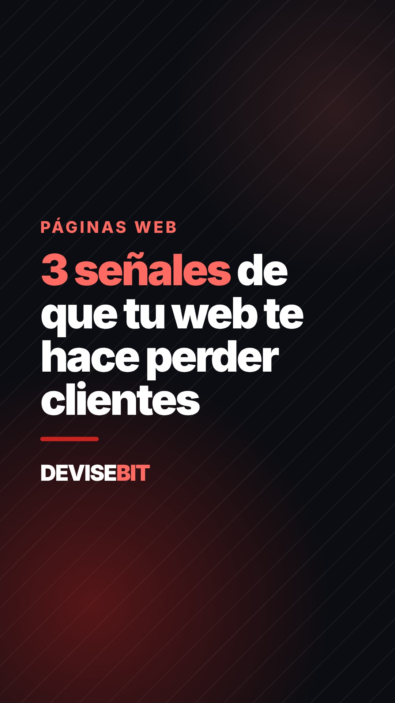
3 señales de que tu web te está haciendo perder clientes. ¿Cuántas tiene la tuya? 👀 #paginaweb #marketingdigital #pymes #emprendedores #argentina
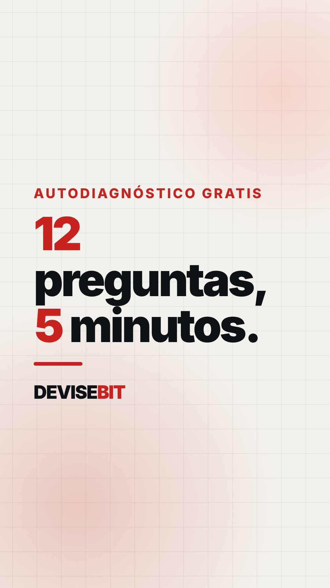
12 preguntas, 5 minutos: así sabés en qué nivel digital está tu empresa. Es gratis, link en el perfil. #transformaciondigital #pymes #empresas #ia
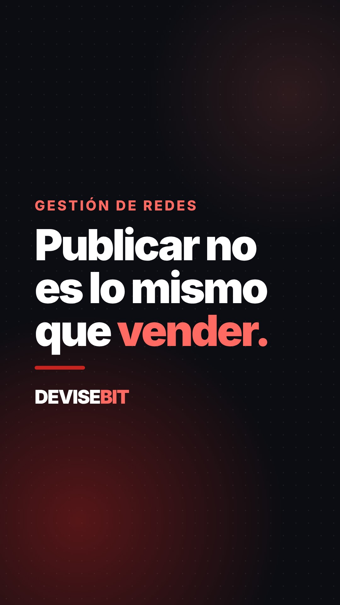
Publicar no es lo mismo que vender. Qué cambia cuando alguien se ocupa de tus redes todos los meses. #redessociales #marketingdigital #communitymanager #emprendedores
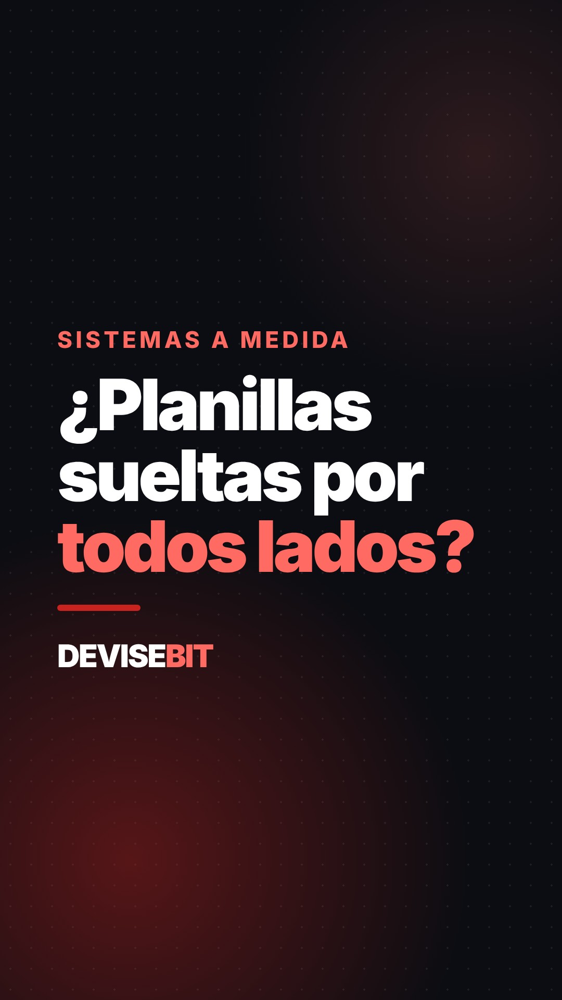
¿Planillas sueltas por todos lados? Un sistema a medida junta clientes, turnos, stock y pagos en un solo lugar. #excel #software #pymes #gestion
23:47. Te escribe un cliente. ¿Quién le contesta? 🌙 #whatsapp #atencionalcliente #inteligenciaartificial #negocios #pymes
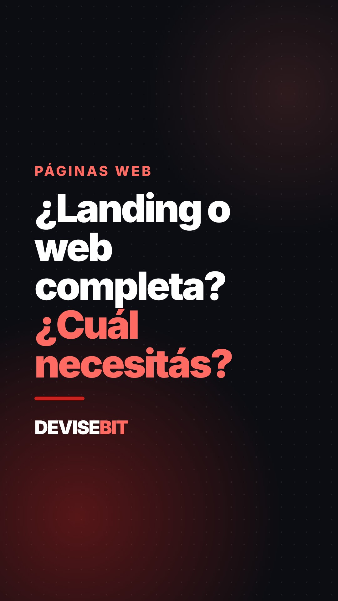
¿Landing o web completa? Depende de lo que quieras lograr. Te lo explico en 20 segundos. #paginaweb #landingpage #emprendedores #marketingdigital
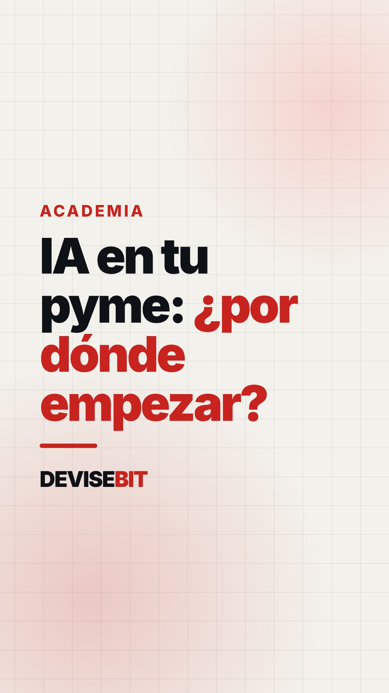
IA en tu pyme: ¿por dónde empezar? Spoiler: no es por la herramienta. #inteligenciaartificial #pymes #automatizacion #productividad
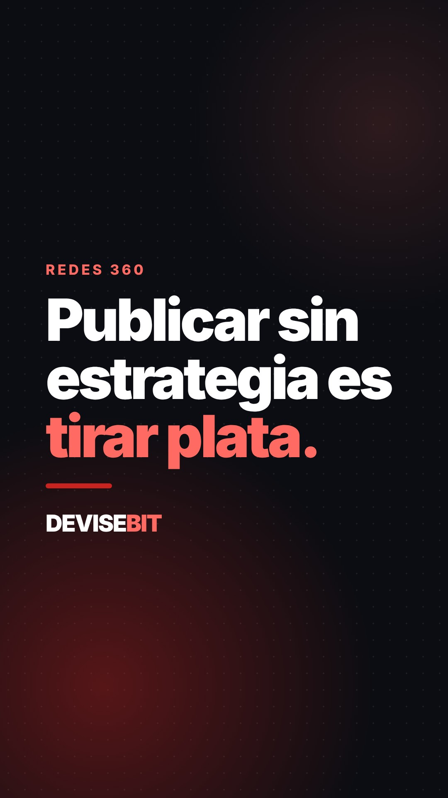
Publicar sin estrategia es tirar plata. Así se ve un mes de redes bien hecho. #redessociales #marketingdigital #pymes #emprendedores
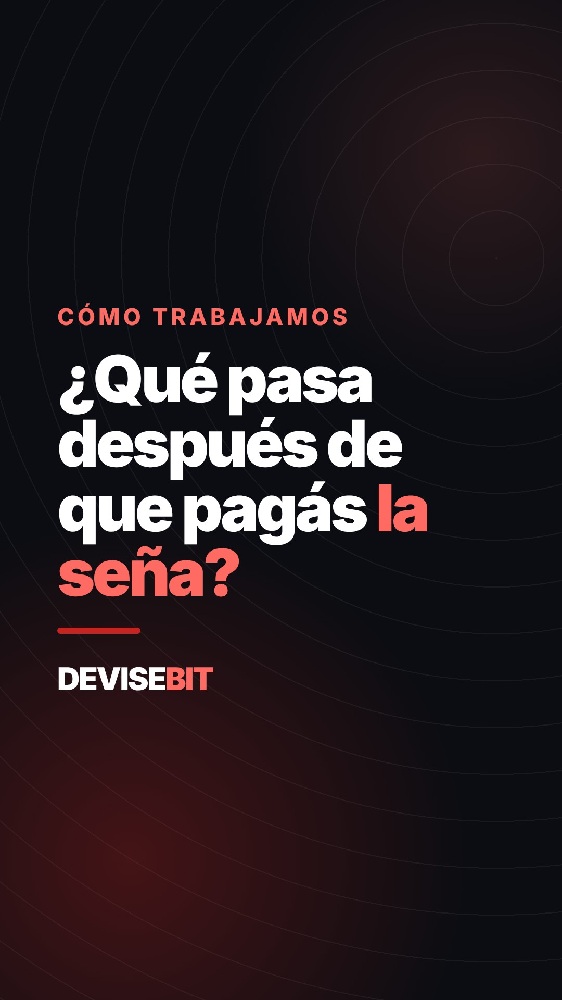
¿Qué pasa después de que pagás la seña de tu web? Paso a paso y por escrito. #paginaweb #emprendedores #pymes #comotrabajamos
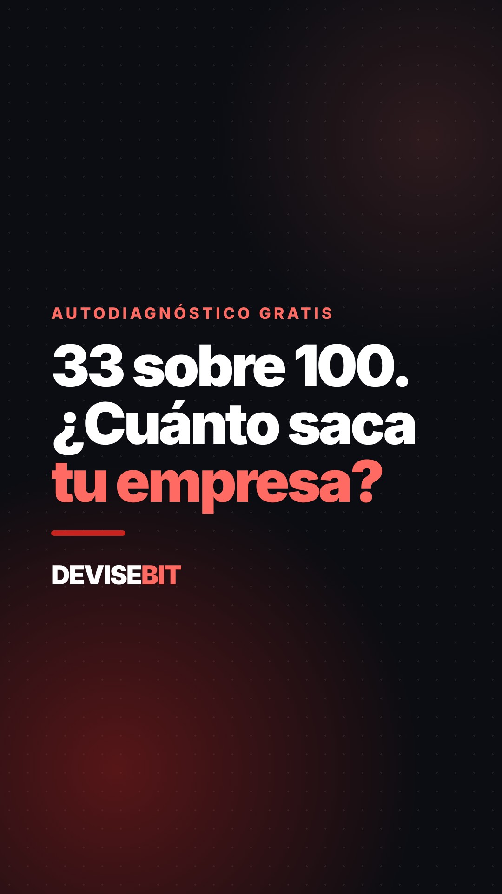
33 sobre 100. ¿Cuánto saca tu empresa? Hacé el autodiagnóstico gratis, link en el perfil. #transformaciondigital #pymes #empresas #gestion
5 preguntas que tu WhatsApp debería contestar solo. ¿Cuál te hacen todos los días? 💬 #whatsapp #automatizacion #atencionalcliente #pymes
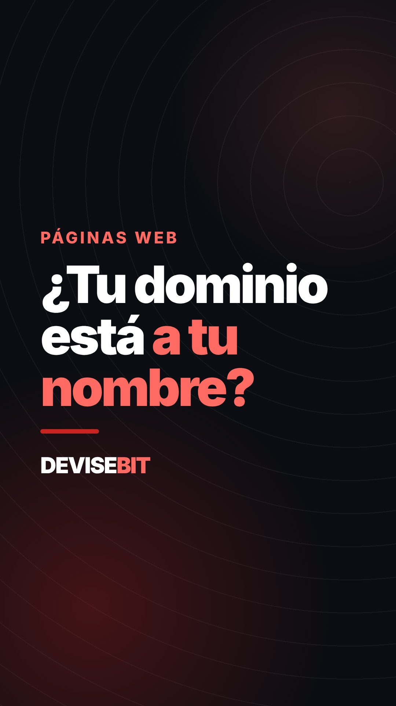
¿Tu dominio está a tu nombre? Si no, tu web no es del todo tuya. Revisalo hoy. #paginaweb #dominio #emprendedores #negocios
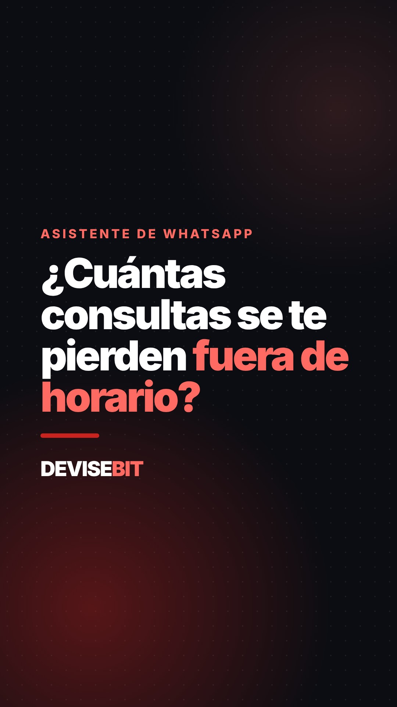
¿Cuántas consultas se te pierden fuera de horario? Mirá cómo responde un asistente (chat simulado). #whatsapp #inteligenciaartificial #turnos #pymes
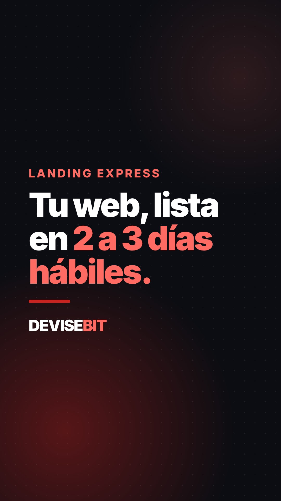
Tu web, lista en 2 a 3 días hábiles. Con botón de WhatsApp y pensada para el celular. #paginaweb #landingpage #emprendedores #pymes
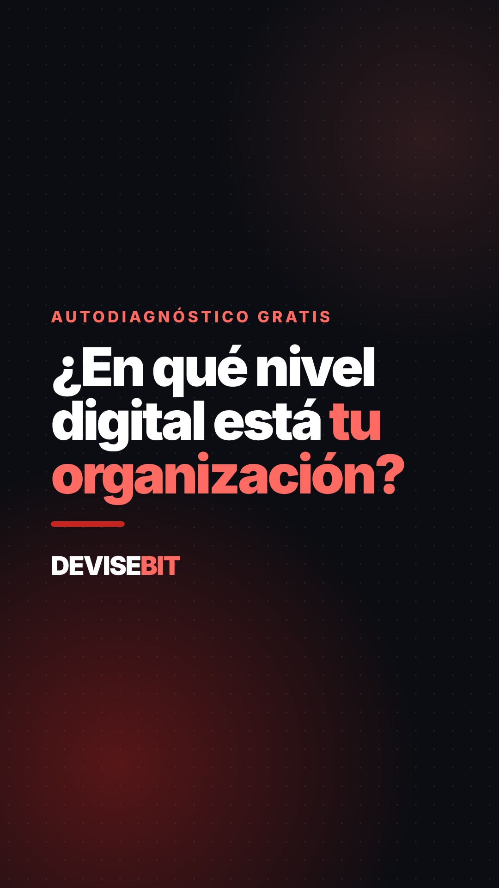
¿En qué nivel digital está tu organización? 12 preguntas y te llevás 3 prioridades. Gratis, link en el perfil. #transformaciondigital #empresas #gestion #ia
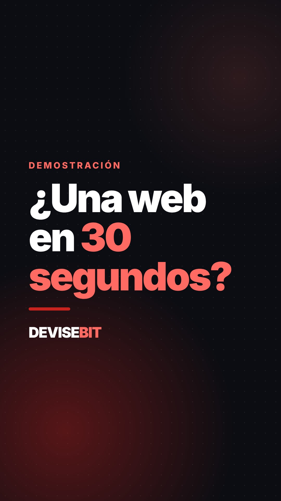
¿Una web en 30 segundos? Mirá la demo. La tuya la diseñamos a medida y la revisa nuestro equipo. #paginaweb #inteligenciaartificial #diseñoweb #pymes